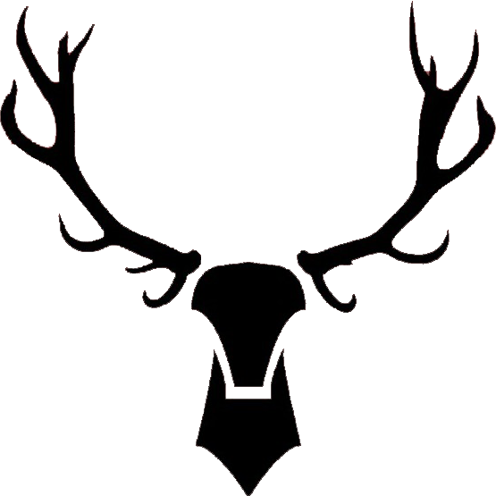

<div class="h3-text" style="background-color: #E7F8FF;">
    <mat-toolbar color="warn" class="fixed-header">
      <mat-toolbar-row>
        <a routerLink="/home"><h6 class="h3-text">M&A</h6></a>
        <!-- Show in case of desktop web browsing -->
        <div class="container-fluid text-center" fxShow="true" fxHide.lt-md>
          <div class="row" >
            <div class="col-lg-10">
              <h3>Mishra & Associates</h3>
            </div>
            <div class="col-lg-1">
              <button mat-button routerLink="/home" class="mat-button">
                <mat-icon inline="true" class="mat-icon">home</mat-icon>
                <div>Home</div>
              </button>
              <mat-divider [vertical]="true"></mat-divider>
            </div>
            <div class="col-lg-1">
              <button mat-button routerLink="/contact" class="mat-button">
                <mat-icon inline="true" class="mat-icon">call</mat-icon>
                <div>Contact</div>
              </button>
            </div>
          </div>
        </div>
        <!-- Show in case of mobile web browsing -->
        <div class="container" fxShow="true" fxHide.gt-sm>
          <button mat-icon-button class="float-right mat-button" (click)="sidenav.toggle()"><mat-icon class="mat-icon">menu</mat-icon></button>
        </div>
      </mat-toolbar-row>
    </mat-toolbar>
  
    <mat-sidenav-container class="sidenav-container">
      <mat-sidenav #sidenav mode='side' 
          [(opened)]="opened" (opened)="events.push('open!')" (closed)="events.push('close!')" 
          style="width: 25%; height: auto;">
        <div><mat-divider></mat-divider></div>
        <div>
          <button mat-button routerLink="/home" class="mat-button" (click)="sidenav.toggle()"
           style="position: sticky; z-index: 10000;">
            <mat-icon inline="true" class="mat-icon-side-menu">home</mat-icon>
            Home
          </button>
        </div>
        <mat-divider></mat-divider>
        <div>
          <button mat-button (click)=sidenav.toggle() routerLink="/contact" class="mat-button">
            <mat-icon inline="true" class="mat-icon-side-menu">call</mat-icon>
            Contact
          </button>
        </div>
        <mat-divider></mat-divider>
      </mat-sidenav>
      <mat-sidenav-content>
        <div class="full-screen">
          <router-outlet style="padding-top: 102px"></router-outlet>
        </div>
      </mat-sidenav-content>
    </mat-sidenav-container>
    </div>